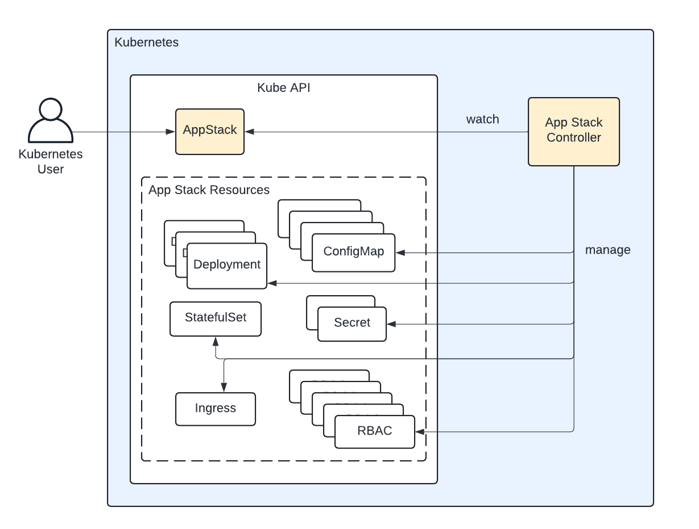

Operator Builder¶
Accelerate the development of Kubernetes operators.
Documentation¶
User documentation can be found at operatorbuilder.io.
Developer documentation can be found here.
What is a Kubernetes Operator?¶
A Kubernetes operator takes human operational knowledge for managing workloads on Kubernetes and encodes it into a piece of software. Operators programmatically perform the functions that a human engineer would otherwise have to execute in managing software systems on Kubernetes. In practice, they usually consist of:
- One or more custom resource definitions (CRDs) that extend the Kubernetes API and provide a data model for defining the desired state of some software system.
- A custom Kubernetes controller that watches the custom resource instances and reconciles the desired state defined in them.
You can find more info on the Kubernetes operator pattern in the Kubernetes docs.
Types of Operators¶
There is a vast amount of functionality that can be implemented in a Kubernetes operator. You are limited by only by the Kubernetes API and the things you can do with Go (or your programming language of choice). That said, there are general categories we can break Kubernetes operators into.
- App Stack Management: This category of operators provide an abstraction for deploying and managing particular applications. They are most helpful with sophisticated stateful apps that are relatively involved to operate and those apps that have multiple workload components. With this kind of operator, a user often creates, updates and deletes a single custom resource instance that triggers a Kubernetes controller to create, update and delete all the Kubernetes resources that constitute that app. The app often consists of dozens of different resources so this kind of operator is extremely helpful in reducing operational toil and improving consistency and reliability. Popular examples include the Prometheus Operator and various database operators. These are a very common category of Kubernetes operator. 
- External Integrations: This kind of operator uses custom resources to define resources external to Kubernetes such as cloud provider resources. The AWS Controllers for Kubernetes is a good example of this.
- Workload Support Systems: Some operators don't directly manage Kubernetes or external resources, but instead provide configuration support services for applications. They often watch resources created by other systems and take config actions to support different workloads. A good example of this is cert-manager which is commonly used to manage TLS assets based on Ingress resource configurations.
When to Use Operator Builder¶
Operator Builder speeds up the development of the first kind of operator: App Stack Managers. It is a command line tool that ingests Kubernetes manifests and generates the source code for a working Kubernetes operator based on the resources defined in those manifests. These are the general steps to building an app stack management operator with Operator Builder:
- Construct the Kubernetes manifests for the application you want to manage and
test them in a Kubernetes cluster. You can also use Helm and the
helm templatecommand to create these resources if a helm chart exists. - Determine which fields in the manifests need to be mutable and managed by the operator, then add markers to the manifests.
- Create a workload configuration to give it some details, such as what you would like to call your custom resource.
- Run the Operator Builder CLI in a new repository and provide to it the marked up manifests and workload config.
That's it! You will now have a Kubernetes operator that will create, update and delete the resources that constitute your application in response to creating, updating or deleting a custom resource instance.
An operator built with Operator Builder has the following features:
- A defined API for a custom resource based on markers in static Kubernetes manifests.
- A functioning controller that will create, update and delete child resources to reconcile the state for the custom resource/s.
- A companion CLI that helps end users with common operations.
The custom resource defined in the source code can be cluster-scoped or namespace-scoped based on the requirements of the project. More info here.
Advanced Functionality¶
Advanced operational capabilities such as backups, restorations, failovers and upgrades are not included in an operator built by Operator Builder. However, all the essential CRUD operations are generated for you, accelerating development and allowing you to get to the advanced functionality much faster.
Built Atop Kubebuilder¶
Operator Builder is a Kubebuilder plugin. Kubebuilder provides excellent scaffolding for Kubernetes operators but anyone who has built an app stack management operator using Kubebuilder can attest to the amount of time and effort required to define the managed resources in Go, not to mention the logic for creating, updating and deleting those resources. Operator Builder adds those resource definitions and other code to get you up and running in short order.
Roadmap¶
Please view our roadmap documentation to learn more about where we are headed and please open a new issue on GitHub if you have an idea or want to see something added to the roadmap.
License¶
Copyright 2024 Nukleros and Third-party Authors and maintained by a core group of maintainers.
The software is available under the Apache 2.0 License.